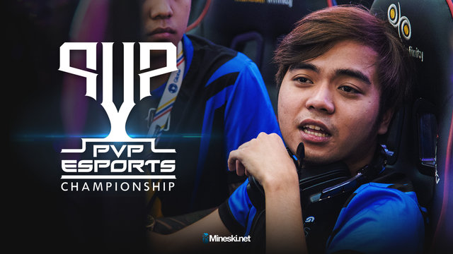

Esports Features

TNC, Fnatic Still Rule the SEA
Southeast Asia’s powerhouses will go to The Kuala Lumpur Major As expected, TNC Predator and Fnatic still reign over the region.

What Should We Expect At The KL Major SEA Qualifiers?
Get your bodies ready for the 2018-2019 Dota Pro Circuit season TNC Predator versus Lotac and other things we should keep an eye out At the SEA qualifiers of the first Major tournament of the 2018-2019 Dota Pro Circuit.
Raging Potato’s New Team May Represent PH For SG’s Biggest Esports Event
LFS will play at the PVP Esports Championship Dota 2 Philippines Qualifier Finals We found Raging Potato's new team and they will be playing at the PVP Esports Championship Qualifier Finals tomorrow.

Mindanao Rising: CDO's INTB first to enter Class A finals
INTB first to the Finals Mindanao may have finally found the team that could posibly carry their hopes to Class S next leg, as Cagayan De Oro's It's In The Bag (INTB; formerly Comeback is Real) dominated Extreme Gaming Philippines (EXG) 2-0 in the winner bracket finals in order to be the first team through to the Class A Grand Finals.